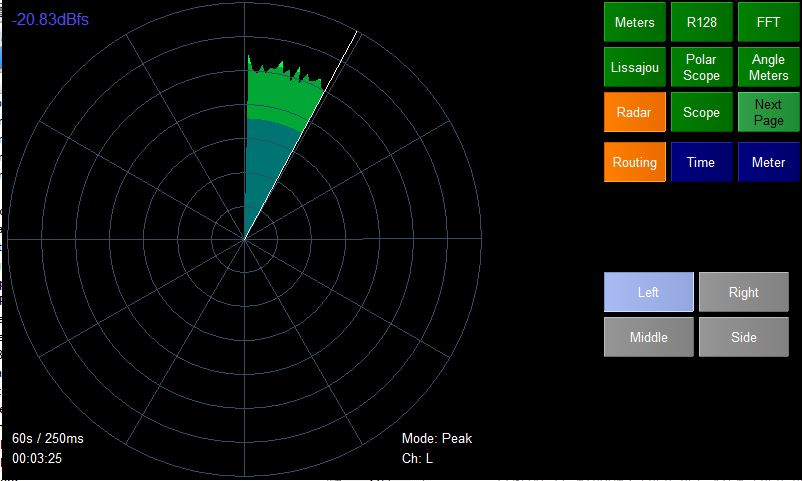
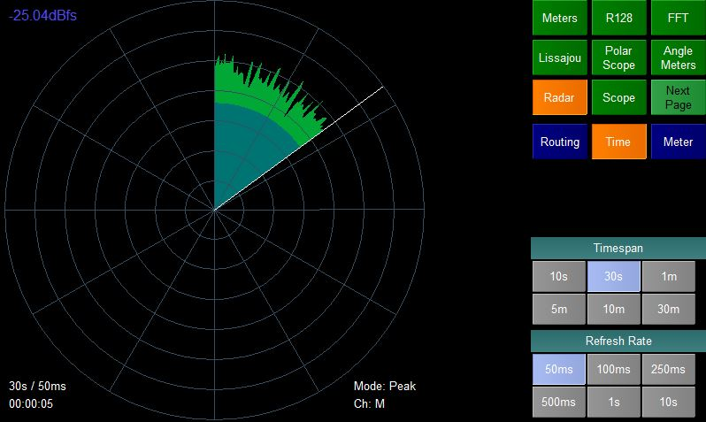
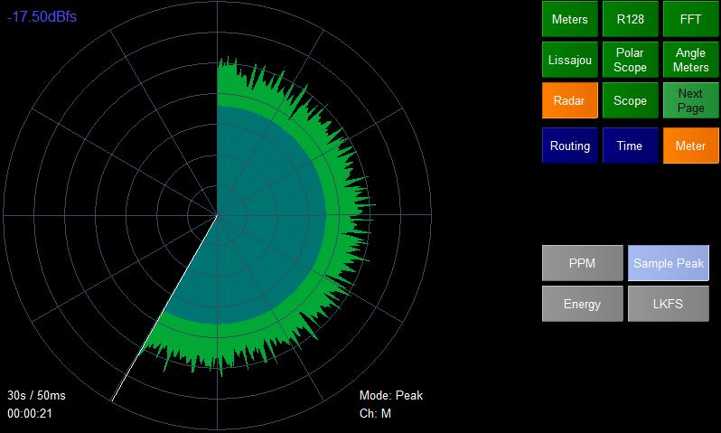

The Radar plugin shows the level of one channel of audio as the distance from the center of a circle. As time advances the radar sweeps around the circle giving a history of audio level.
The label at the top left shows the instantaneous level of the audio.
The labels at the bottom left show the time it will take the radar to sweep round the circle and the refresh rate. Also the amount of time the radar has been running is shown.
The labels to the right show the meter mode and channel routing.
Note - the radar will be paused if the page is not selected.
The Routing options page allows you to select which channel you wish to show on the radar.
In stereo mode the user is also allowed to select

The time option page allows the user to set the Timespan and Refresh Rate of the sweep.
Timespan
This is the time it will take the radar to sweep around the circle.
Refresh Rate
This is the speed that the radar will be updated. e.g. a Refresh Rate of 50ms means the radar will be updated 20 times a second.
These two values combine to decide the angle that the sweep moves on each update. Long timespans will short refresh rates will result in small angle changes which may not all be noticeable.

There are a number of possible metering modes available. These are defined in ppmtypes.xml and change the scale and ballistics of the meter.